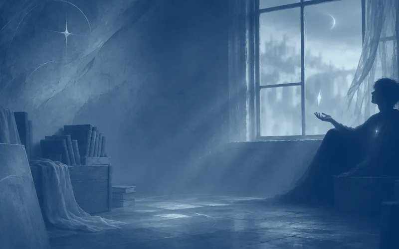

Atto I · Capitolo 1
Reietto
Era un giorno come un altro, io dipingevo sulla parete della soffitta di casa mia, con la luce del sole che attraversava la piccola finestra dalla quale potevo osservare parte della città senza essere notato - o almeno così credevo - e tra una pennellata e un sorso d’acqua, continuavo a osservare i miei compaesani, impegnati nella loro quotidianità, nelle loro faccende, nei loro lavori. I bambini che giocano, i chioschi di frutta e verdura gremiti di persone, le guardie a cavallo, una tranquillità quasi disarmante per il periodo che si stava vivendo, ma la tensione, seppur non tangibile, si percepiva appieno.
Sono sempre astratti, i miei dipinti, non ho mai un’idea precisa in testa, non mi voglio limitare a preconcetti o a una tela di dimensioni predefinite, la mia tela è ciò che mi circonda, tutte le mura di casa mia sono ormai come un enorme mosaico. Oggi i colori sono freddi, quasi senz’anima; ritraggono una figura filiforme, non sembra nemmeno umana, dalla pelle pallida e gli occhi vacui, lo sfondo indefinito e il cielo quasi incolore.
La luce sparì. Mi girai verso la finestra: qualcosa aveva coperto il sole. Mi affacciai. Nella via principale, un convoglio reale avanzava verso il Palazzo.
La folla lungo la via principale della Capitale, prima brulicante e chiassosa, si era pietrificata in un silenzio innaturale, inchinata in un’unica, tremante onda. Solo il rumore del vento e degli zoccoli dei cavalli che battevano un ritmo funereo sulla pietra. Un brivido, freddo e viscido, mi percorse dalla nuca alla base della schiena. Stavo solo aspettando che il sole tornasse.
Da bambino credevo che il futuro fosse un pozzo senza fondo in cui poter pescare giorni. Ero ancora ignaro di ciò che il mondo attorno a me rappresentasse veramente. Crescendo ho imparato a contare i giorni che calavo dentro e ad ascoltare l’eco che si faceva ogni volta più vicino. Il mio errore fu credere che si trattasse solo di un gioco, vivevo ogni giorno come se non ci fosse un domani. Quel gioco lo facevo ai piedi delle mura che circondavano la città, le stesse che ci donavano prestigio, un senso di grandezza e che dovevano proteggerci, ignaro che la mia vita sarebbe diventata un continuo misurarne la profondità, e l’eco, la distanza che mi separava dagli altri. Ancora non potevo saperlo, ma avevo inconsciamente più ragione di quanto adesso vorrei ammettere: per me un domani vero non ci sarebbe stato.
Il palcoscenico di quella illusione era la capitale del nostro Regno, Illyrium, una città ricca e prospera dove risiedevano la gran maggioranza delle persone di rilievo della società. Per chiunque venisse da fuori, noi eravamo l’élite, il futuro, l’avanguardia pronta a condurre la vittoria nella guerra che stava per travolgerci.
Quand’ero ancora un moccioso credevo ancora fedelmente a ogni parola di quel racconto. Lo respiravo nell’aria carica di polvere e ambizione, lo vedevo riflesso negli sguardi compiaciuti degli adulti. Ci volle tempo - e una serie di piccoli, lancinanti rifiuti - per comprendere che quel “noi” così tronfio e solenne non era altro che un castello di carte vecchie e rovinate. E che io, in realtà, non ne facevo parte, non ne avevo mai fatto parte. La mia posizione era quella di un’ombra tollerata, un ingrato ricordo di un’antica gloria familiare ormai sbiadita.
In tempi come quelli, la legge era semplice: comandi o obbedisci. La mia gente incarnava questa regola per il mondo intero. Ma forse “la mia gente” non sono mai stati davvero loro. Non sono mai stato accettato come cittadino di Illyrium, non ero niente più che un reietto e l’unico motivo per cui non ero mai stato esiliato è solamente per il fatto che un mio antenato fu uno dei padri fondatori della Capitale. Tutt’ora, anche se i miei genitori non ci sono più, non osano cacciarmi per paura di attirare l’ira dei miei antenati, ma questo non gli impedisce di trattarmi come se non avessi diritto a vivere accanto a loro.
Quando ero piccolo non riuscivo a capirlo, dentro me cresceva sempre più questa sensazione di odio insaziabile. In un’epoca in cui il potere era tutto io ero quello che ne possedeva più di chiunque altro nella Capitale e forse anche nel Regno, eppure venivo screditato, rifiutato, costantemente evitato come se potessi trasmettere qualche tipo di malattia mortale. Non potevo capire, non potevo sapere, non era ancora il momento. Nonostante non ne fossi veramente affetto nessuno era a conoscenza del mio passato ed io meno di chiunque altro. Il mondo era malato, molto più di quanto si potesse immaginare e la falsa felicità di cui tutti si dipingevano il volto ogni giorno avrebbe presto lasciato spazio alla vera natura ancora assopita del nostro mondo.
Sono sempre stato vittima dell’indifferenza, della paura non per i morti che ci hanno preceduti, ma per i vivi, per me… per ciò che mi rende diverso da chiunque altro. Nessuno è mai riuscito a capirmi, vero anche che nessuno ci ha mai nemmeno provato, ma non posso biasimarli, tutt’ora faccio fatica a capire me stesso, sono dovuto crescere da solo, fin da quando ero appena capace di camminare, se non fosse stato per l’anomalia del mio potere non sarei sopravvissuto. Ho sempre notato un senso di vuoto negli occhi di chi mi guardava. La pienezza era tutto per loro - il potere, il successo, la famiglia, il futuro. E io ero il vuoto che non volevano vedere.
Quando camminavo per strada non erano rari gli sguardi taglienti, i sussurri alle spalle che si alternavano a silenzi assordanti e crudeli, non ho mai scelto di essere chi sono, non ho mai potuto dare voce a ciò che provavo davvero, l’unica valvola di sfogo era dipingere, l’unico modo per non perdere il contatto con la realtà e per “coprire” le crepe che mi circondavano, che facevano parte di me, della mia casa e delle vere e proprie fondamenta della nostra società.
I libri erano rimasti, stipati in casse di legno che nessuno aveva mai pensato di portare via. Quello che restava di una famiglia che non ricordavo. Li avevo letti tutti, alcuni più volte, non perché fossi particolarmente curioso ma perché non avevo altro. Parole di gente morta, per la maggior parte. Eppure erano stati gli unici a non voltarmi mai le spalle.
Illyrium, la Culla del Cielo. Sono cresciuto in quella che doveva essere la luce per la Regione, il faro per un nuovo inizio, ancora più glorioso. Tutti ci vedevano come la loro salvezza, qualcuno in cui credere. Era questo il sogno per cui avevano lottato i padri fondatori: una culla in cui nascere, poter crescere protetti così da diventare sempre più forti, e rendere insieme, sempre più reale e tangibile il desiderio di un futuro prospero. Ma i sogni, come i castelli di carte, sono fragili. E quando crollano, le macerie non distinguono tra chi li ha costruiti e chi ci è nato dentro. Quando sono nato io, della famosa ‘Culla del Cielo’ non ne rimaneva che la nostalgia.
Più il tempo passava, più mi convincevo che il Cielo cullato dai fondatori fosse morto. E io non ne ero solo l’epitaffio, ma la tomba stessa. La prova non stava nelle parole, ma nell’essenza del mio potere. In ciò che mi rendeva un’aberrazione.
A Illyrium tutti hanno sempre descritto la magia come un fiume. Un circuito interiore che canalizza l’energia dal mondo, un flusso che si può deviare, controllare, potenziare. Una forza viva e in movimento. Io questo fiume non lo sentivo. Dentro non sentivo una corrente in movimento, ma un lago sotterraneo, fermo, stagnante, una realtà distaccata e a sé stante. La cosa veramente agghiacciante era sapere che non era possibile creare a mano i canali mancanti. Dovevo spaccare il terreno. Ma chi poteva sapere cosa ne sarebbe poi fuoriuscito?
Nel mio caso però, il potere in me divampa, è incessante ed è una sensazione simile a sangue che scorre dentro di me, mi hanno sempre detto che sono un’anomalia, un errore, che la cicatrice che ho sul petto è segno di sventura, del demonio, di qualcosa che non dovrebbe far parte del nostro mondo.
La nostra società venera il potere, ma solo quello che ritengono corretto, nessuno sa quali siano i canoni di questo ideale, sicuramente io non ci rientro, nessuno mi ha mai insegnato come gestire questa mia anomalia, come poterla sfruttare, come poter diventare più forte. Alla fine sono finito per non utilizzarla affatto, a vivere come una persona priva di un qualsiasi potere, tutto questo mi ha reso ancora più diverso, inadeguato, rendendomi un giorno alla volta, sempre più prigioniero della mia stessa unicità.
Quel giorno invece qualcosa successe. Non mi era mai successo di provare una sensazione simile, non ho fatto in tempo a rendermene conto, mi sono ritrovato in mezzo a centinaia di occhi e bocche spalancate, il nitrito dei cavalli e in mano, al posto del pennello che era finito a terra assieme ai colori sul pavimento della mia soffitta, mi ritrovo una freccia di luce, che solo da un incantesimo potrebbe esser stata generata. Il contatto fu un ringhio silenzioso che mi scosse i denti, un dolore fulmineo e chiaro che partì dalla mia cicatrice sul petto. Alle mie spalle un membro della famiglia reale impietrito con la punta della freccia a pochi centimetri dal suo volto, ero riuscito a bloccarla prima che arrivasse a destinazione.
Mi guardai attorno, non riuscivo a capire se il tempo si fosse fermato, un silenzio assoluto ed un attimo dopo il caos più totale: a un certo punto notai che la mia mano era ormai vuota e le Guardie si avventarono su un uomo tra la folla, le cui mani fumavano ancora di magia residua. Centinaia di occhi, prima fissi su di lui, si spostarono tutti su di me. Notai il terrore di prima, per l’attentato, tramutarsi in qualcos’altro. Una donna si portò una mano alla bocca. Un anziano signore fece, lentamente, il segno di scongiuro che di solito riservavano a me quando mi voltavano le spalle. La palla con cui giocavano i bambini continuava a rotolare per inerzia, le guardie ormai scese da cavallo avevano catturato l’assassino - che non era altro che un nostro compaesano - e si voltarono anche loro tra me e il Reale. Ma questa volta i loro occhi non fuggivano. Erano incollati alla scena, a me, alla mia mano ancora illuminata dai residui di quella freccia ormai svanita.
Sguardi tremanti, il loro terrore, la loro incredulità. Avevano visto l’Anomalia salvare uno di loro. Sembrava tutto così surreale; tra il panico generale mi sentii toccare la spalla, mi voltai e vidi colui che avevo appena salvato chinarsi verso di me, afferrarmi il braccio e alzarlo verso la folla ancora incredula:
«Il mio salvatore,» disse, con una voce abbastanza alta da coprire il silenzio.
A ripensarci ancora mi tremano le braccia e la cicatrice sul mio petto pulsa di un calore sordo e persistente, come un secondo cuore che batteva per la prima volta. Per un momento pensavo di star solamente sognando. Ma io ero lì, al centro di qualcosa che non avevo cercato, con ancora il residuo di magia che svaniva tra le dita come polvere brillante. Per la prima volta nella mia vita qualcuno mi guardava senza paura.
Avevo appena salvato qualcuno. Non sapevo ancora quanto mi sarebbe costato.